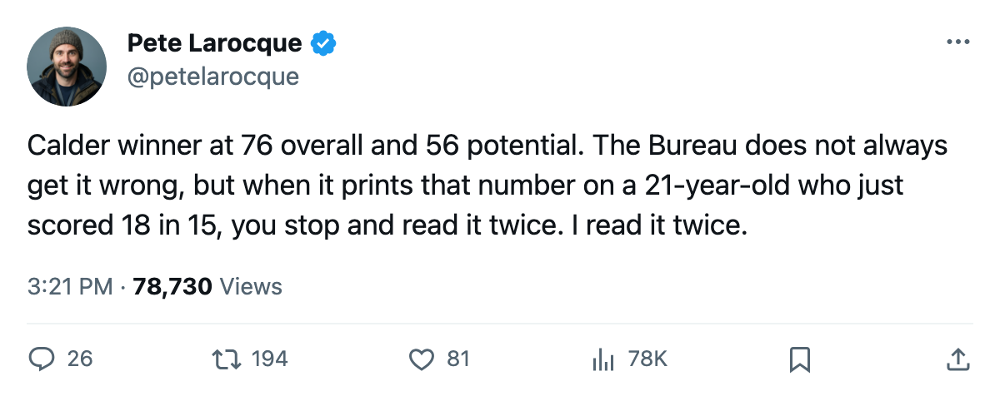
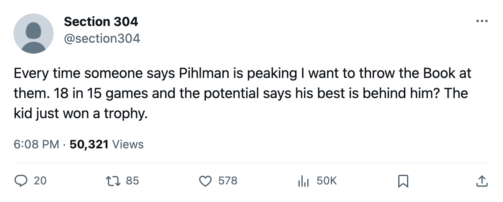

Tuomo Pihlman Is the 2004 Calder Winner. His Potential Grade Is 56.
The Book has the 21-year-old at 76 overall. The long-term likelihood printed underneath that number says his best season is the one he is playing right now.
 Pete LarocqueScouting editor · The Prospect File
Pete LarocqueScouting editor · The Prospect File
Pierre-Marc Bouchard

The League Scouting Bureau's Book says the league's best rookie from last spring already has his best season in hand.
Tuomo Pihlman76 took the Calder Trophy last season out of  Minnesota Wild after the 9th overall selection in June 2004. He is 21 years old. Fifteen games into his second professional season he has 18 points on 21.8 minutes a night. The Bureau's current overall reads 76. The potential figure, which tracks how far the base grade is expected to travel, reads 56.
Minnesota Wild after the 9th overall selection in June 2004. He is 21 years old. Fifteen games into his second professional season he has 18 points on 21.8 minutes a night. The Bureau's current overall reads 76. The potential figure, which tracks how far the base grade is expected to travel, reads 56.
Those are both printed on the same line in the Book. I saw the gap open in October, when he carried an overall of 76 and a potential of 56, and the numbers have not changed since. The Development Index has him at +4, meaning his current grade sits above the base. The base drifts toward 56, form with it.
The Bureau's potential figure is not a ceiling. It is the probability that the attributes underneath the grade move the base number upward. A high potential on a low current overall says there is room. A low potential on a high current overall says there is not.
The same building, the opposite read
Three lockers down, the Bureau has written the other story.
Pierre-Marc Bouchard79 went 8th overall in 2002. He is also 21 years old. He plays center for Minnesota Wild. His overall is 79. The Index has him at +9, with a base of 74. His potential reads 87.
Bouchard has 7 points in 19 games on 17.6 minutes a night. He scores at roughly one quarter of Pihlman's per-game rate. The Bureau is not reading the box score. It is reading the base and the gap between base and potential.
| player | draft | overall | form | potential | gp | pts | mpg |
|---|---|---|---|---|---|---|---|
| [[player:1001038\|Pihlman]] | 2004 #9 | 76 | +4 | 56 | 15 | 18 | 21.8 |
| [[player:911\|Bouchard]] | 2002 #8 | 79 | +9 | 87 | 19 | 7 | 17.6 |
Two first-round picks, two 21-year-olds, same building. One carries a potential grade 20 points below his current overall. The other carries one 8 points above it, with form climbing and room between base and ceiling.
What the gap costs
A player whose potential sits well below his overall carries risk for the club holding him, though not this season or next. The base grade that feeds future contracts, trade value, and the Bureau's next revision slides toward the potential figure. If Pihlman's base is 72 and his potential is 56, the base moves toward 56 over the years the attributes fail to develop. The form number, the +4 on the Index, is the season he is playing, not the asset.
Pihlman will be 22 by the end of the season. The Minnesota Wild front office drafted him at 20 and handed him the Calder by 21. They know the numbers. Every club reads the Book.
The contrast is not scoring; Pihlman scores more right now. The Bureau grades Bouchard's 79 as a waypoint on a route toward 87, and grades Pihlman's 76 as a peak the base will come back down to meet.
The rest of the 2004 class at Minnesota
Minnesota Wild drafted two other first-rounders in 2004. Yury Salei68 went 29th overall. He is 21, 13 games in with 0 points and an overall of 68. The Book carries him at 68 with no goals through the season.
Three first-rounders in one draft, one dressing room. The 9th pick is scoring. The 29th has not scored. The 8th pick from 2002 is climbing toward the 87 the Bureau says he can reach.
MIN sits 6-8-3 in 19 games, 4th in the Northwest, on a 2-game winning streak. They are 3-8 at home and 5-3 on the road. The home ice is where Pihlman plays 21.8 minutes a night and the Bureau says it will not look this good for long.

